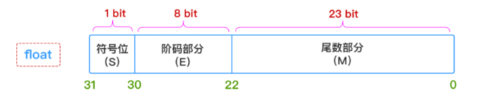
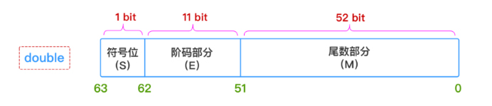
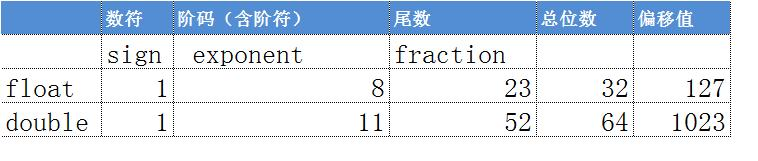

浅谈IEEE 754标准的浮点数误差成因
1. IEEE 754标准的产生
20 世纪 80 年代（没有制定 IEEE 754 标准）之前，业界还没有一个统一的浮点数标准。相反，很多计算机制造商根据自己的需要来设计自己的浮点数表示规则，以及浮点数的执行运算细节。另外，他们常常并不太关注运算的精确性，而把实现的速度和简易性看得比数字的精确性更重要，而这就给代码的可移植性造成了重大的障碍。
直到 1976 年，Intel 公司打算为其 8086 微处理器引进一种浮点数协处理器时，意识到作为芯片设计者的电子工程师和固体物理学家也许并不能通过数值分析来选择最合理的浮点数二进制格式。于是，他们邀请加州大学伯克利分校的 William Kahan 教授（当时最优秀的数值分析家）来为 8087 浮点处理器（FPU）设计浮点数格式。而这时，William Kahan 教授又找来两个专家协助他，于是就有了 KCS 组合（Kahn、Coonan和Stone），并共同完成了 Intel 公司的浮点数格式设计。
由于 Intel 公司的 KCS 浮点数格式完成得如此出色，以致 IEEE（Institute of Electrical and Electronics Engineers，电子电气工程师协会）决定采用一个非常接近 KCS 的方案作为 IEEE 的标准浮点格式。于是，IEEE 于 1985 年制订了二进制浮点运算标准 IEEE 754（IEEE Standard for Binary Floating-Point Arithmetic，ANSI/IEEE Std 754-1985），该标准限定指数的底为 2，并于同年被美国引用为 ANSI 标准。目前，几乎所有的计算机都支持 IEEE 754 标准，它大大地改善了科学应用程序的可移植性。
考虑到 IBM System/370 的影响，IEEE 于 1987 年推出了与底数无关的二进制浮点运算标准 IEEE 854，并于同年被美国引用为 ANSI 标准。1989 年，国际标准组织 IEC 批准 IEEE 754/854 为国际标准 IEC 559：1989。后来经修订后，标准号改为 IEC 60559。现在，几乎所有的浮点处理器完全或基本支持 IEC 60559。同时，C99 的浮点运算也支持 IEC 60559。
2. 标准浮点格式
IEEE 754标准准确地定义了单精度和双精度浮点格式，并为这两种基本格式分别定义了扩展格式，如下所示：
- 单精度浮点格式（32 位）。
- 双精度浮点格式（64 位）。
- 扩展单精度浮点格式（≥43 位，不常用）。
- 扩展双精度浮点格式（≥79 位，一般情况下，Intel x86 结构的计算机采用的是 80 位，而 SPARC 结构的计算机采用的是 128 位）。
其中，只有 32 位单精度浮点数是本标准强烈要求支持的，其他都是可选部分。本文主要针对单精度浮点与双精度浮点的存储格式做一些简要的阐述。
2.1 什么是浮点误差
很多人在写代码时中都曾经遇到过所谓的浮点误差，以js为例来看0.1+0.2结果是什么：
1 | |
正常情况下应该是0.1+0.2=0.3，但为什么运算结果却不是呢，这并不是什么bug，也并不是程序设计有问题，这个原因与浮点数的存储原理有关。在开始了解浮点数的存储原理前，需要先知道js中数值是以何种形式存储的。
1 | |
2.2 计算机中是如何存储整数的
在了解为什么会产生浮点误差前，我们先了解一下计算机是如何用0和1来表示一个整数的。我们知道计算机主要是采用二进制计算和存储数据的，我们假设一个32bit的无符号整数（unsigned integer），那么就是说它有32个位置来存放0或1，那么它的值的范围就是0~232-1，即0~4294967295，也就是说它可以精确的表达出0~4294967295之间任意整数而不会有误差。
同时，我们可以看得出虽然0~232有很多整数，但个数毕竟是有限的，但是浮点数就不同了，它可以有例如，2.1，2.11，2.111…等等无数个浮点数。那么该如何把这些无限的浮点数塞进有限的32bit的空间里呢，在IEEE 754标准诞生前，各个CPU厂家发明了各种浮点数的表示方法，后来则是统一遵循这个标准进行设计。
2.3 浮点数格式的正规化
浮点数在存储之前必需先进行符合IEEE 754的格式的正规化操作，即由一个有效数字乘以2的整数次幂得到,类似于十进制的科学计数法，下面举例说明：
浮点数5.5如何进行格式正规化：
5.5=5+0.5
转化为二进制：
22+21+2-1 即 101.1
格式正规化：
1.011×22
2.4 十进制与二进制的转化
十进制数值转化为二进制方法之一：整数部分为留余数，倒排序；小数部分为乘以2，一直到全部转化整数为止，正排序。也可使用在线进制转换工具
十进制8.125转化为二进制：
整数部分：
8÷2=4 余数0；4÷2=2 余数0；2÷2=1 余数0；最后剩余1；倒排序二进制表示为1000
小数部分：
0.125×2=0.25 整数部分0；0.25×2=0.5 整数部分0；0.5×2=1 整数部分1；正序二进制表示为001
因此十进制8.125转化为二进制为1000.001
2.5 浮点数的表示法
一个浮点数分为三个部分，分别是符号位（sign bit），指数偏移值(exponent bias)，分数值(fraction)。浮点数的值(value)=符号位（sign bit）×指数偏移值(exponent bias)×有效数(fraction)。
符号(S) :用來表示正/负(0/1)。
指数(E) :浮点数正规化后的次方，单精度的指数部分采用超127格式，即将原本的次方数加上127，因为次方数有可能是负的，加上计算机要表示负号时，必须拿一个位元来表示，所以就将-128~+127改为0~255，所以基准点就从0变成127。双精度的指数部分是−1022～+1023加上1023，指数值的大小从1～2046（0（2进位全为0）和2047（2进位全为1）是特殊值）。浮点小数计算时，指数值减去偏正值将是实际的指数大小。
有效数(F) :正规化后小数点之后的值。
单精度浮点数(float)

sign：最左侧1bit 代表正负号，正数的话sign就为0，反之则是 1
exponent：中间的8bit代表正规化后的次方数，采用的是超127格式，也就是次方数还要再加上127
fraction：最右侧的23bit 放的是小数部分，以1.0001来说就是去掉1.之后的0001
我们以8.125为例，表示成IEEE 754标准的32bit格式：
正规化：8.125=+1.000001×23
| Sign | Exponent | Fraction |
|---|---|---|
| 0 (+) | 1000 0010 (3+127=130) | 0000 0100 0000 0000 0000 000 |
二进制表示：0100 0001 0000 0010 0000 00000 0000 0000
0.1 + 0.2 != 0.3的原因就在于0.1、0.2和0.3分别用二进制表示时，均无法转化成2的次方数相加，最后产生不同误差。
有兴趣可以到IEEE-754 Floating Point Converter官网测试。
双精度浮点数(double)
为了让误差更小，IEEE 754也定义了如何用64bit来表示浮点数，跟32bit比起来fraction部分大了超过两倍，从23bit变成52bit，所以精准度自然提高许多。

sign：最左侧1bit 代表正负号，正数的话sign就为0，反之则是 1
exponent：中间的1bit代表正规化后的次方数，采用的是超1023格式，也就是次方数还要再加上1023
fraction：最右侧的52bit 放的是小数部分，以1.0001来说就是去掉1.之后的0001

2.6 如何解决浮点数误差
1、设定一个最大允许误差值（EPSILON）例如ES6中内置的Number.EPSILON
例如把 0.1 + 0.2 == 0.3改写成 0.1 + 0.2 — 0.3 <= epsilon
2、完全使用十进制进行计算，但不建议大规模使用，因为十进制计算是组件模拟出来的，CPU计算时仍会转化为二进制，会拖慢运算速度。